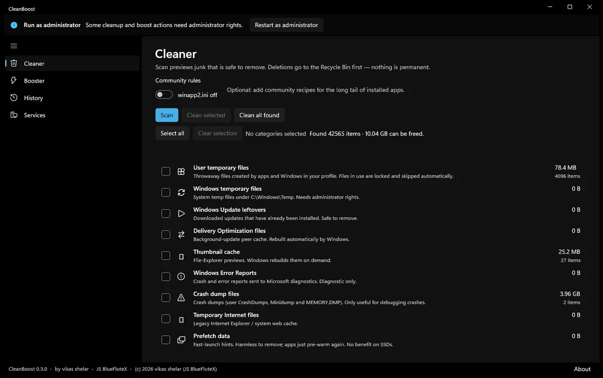
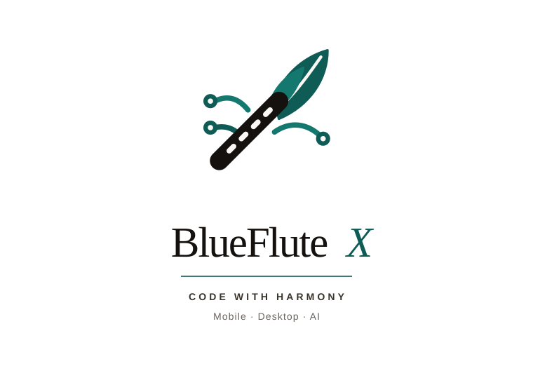

Android
Native Kotlin and cross-platform apps built for real device matrices, not emulators.
KotlinJetpackFlutter
Software studio · Pune, India
BlueFluteX designs and engineers software for teams who care how it feels — and how it still holds up two years later. Mobile, desktop, and the systems underneath them.
What we believe
We don’t ship templates. We ship systems — architected to be read by the next person, extended by the next team, and still standing years later.
Code should explain itself to a stranger. If it needs a comment to be understood, it needs a rewrite.
Budget, deadline and legacy shape the answer. We design inside them rather than around them.
Documentation, tests and a deploy pipeline are deliverables — not a favour we add if asked.
What we build
Native Kotlin and cross-platform apps built for real device matrices, not emulators.
KotlinJetpackFlutter
Swift and SwiftUI apps that respect platform conventions instead of fighting them.
SwiftSwiftUIXcode
Cross-platform desktop software that starts fast and stays responsive under load.
Tauri.NETElectron
Playable work across mobile, PC and console — scoped so the fun arrives before the budget runs out.
UnityUnrealGodot
Retrieval, inference and analytics wired into products — with the evaluation harness that keeps it honest.
LLM appsRAGPython
Second opinions on the systems you already own — code review, risk assessment, migration plans.
ReviewMigrationStrategy
Selected work · public portfolio
From desktop utilities to Android apps, AI systems and real-time worlds — explore the public projects and the engineering behind them.
A one-click Windows cleaner where the hard part wasn’t the cleaning — it was making every deletion reversible and visible. Every removal routes through the Recycle Bin, and the interface reports the outcome of each individual file while the run is in progress.
THE IDEA
Make system cleanup understandable while it runs: clear categories, a visible per-file outcome, and no silent “trust us” deletion.
SAFE BY DESIGN
A single deletion funnel brings the path guard, symlink refusal, Recycle Bin routing and audit logging into the same controlled path.
THE BUILD
The public project includes 22 curated cleanup categories, 4,000+ community rules and 46 automated tests. It is published under the MIT licence.

Actual product screenshotThe project library
A browsable catalogue of 16 additional public repositories. Forked work is credited to its upstream maintainers; early concepts are labelled honestly.
An offline Android video-editing foundation with a canonical project model, multi-stage colour workflow, effects, audio mixing, captions, keyframes and export presets.
Explore repositoryA separate native Android editor project with video layers, trimming, filters, speed controls and export workflows, backed by Kotlin and a C++ component layer.
Explore repositoryAn AI-native Linux OS engineering effort built around a custom boot path, Rust services, C system utilities and reproducible kernel/root-filesystem tooling.
A premium flashlight app foundation with real torch control, device-aware intensity, timed shutdown and configurable BEAM, STROBE, SOS, BEACON and MORSE modes.
Explore repositoryA privacy-oriented Android vault concept with media access and biometric integration points. Presented as an app prototype, not a verified security product.
Explore repositoryAn Android marketplace app foundation organised around a simple buying-and-selling experience, with its own application shell and UI theme.
Explore repositoryA landscape-first Android space exploration project, with a dedicated app shell configured for immersive, hardware-accelerated presentation.
Explore repositoryA compact Android study-organising app project built around the idea of keeping syllabus and learning structure close at hand.
Explore repositoryA Flutter chat-app project with separated data, core, provider, screen and widget layers, plus a dedicated backend directory.
Explore repositoryA desktop-use agent architecture built around brain, motor and skill layers, with screen capture, input control, learned actions and a web admin panel.
Explore repositoryA cross-platform 3D social-world concept that turns captured real-world video into explorable environments, connecting mobile, PC and Unreal Engine clients.
Explore repositoryA 3D pet-simulator concept for kids aged 6–9, built around painting a creature and turning those marks into playful abilities. The repository currently describes an early scaffold.
Explore repositoryAn Unreal Engine editor plugin that connects AI-assisted development tools through a local MCP server for inspecting C++ classes, Blueprints, assets and build logs.
Explore repositoryAn upstream C inference-engine project exploring large mixture-of-experts models across disk, RAM and VRAM. This GitHub repository is a fork; the original authors remain credited.
A glassmorphism-focused Compose Multiplatform UI showcase. This entry is a forked exploration of the upstream project, not presented as an original library.
A Jetpack Compose UI-components library exploration covering reusable dialogs, sheets, pickers, snackbars and other Android interface patterns.
No projects match that search. Try another name or category.
This public portfolio excludes private repositories and empty starter repos. Forked work links to its upstream source so ownership stays clear.
How we work
We start from the problem and the constraints, not the feature list you were handed.
Data model, module boundaries and failure modes settled before anyone opens a design file.
Weekly builds you can click on, with the trade-offs written down rather than presented.
Tests, docs and a deploy pipeline, so your team owns the system and we are not a dependency.
The studio
A flute makes sound from tuned air. Software makes results from tuned systems — and it is just as easy to play out of tune. The name is a reminder that precision and restraint are what make the result sing.
We are a small team in Pune, India. We take a deliberately small number of engagements so the people you meet are the people who build it.

Get in touch
A paragraph is plenty. What it does, who it’s for, and when it needs to exist. We reply within two working days.